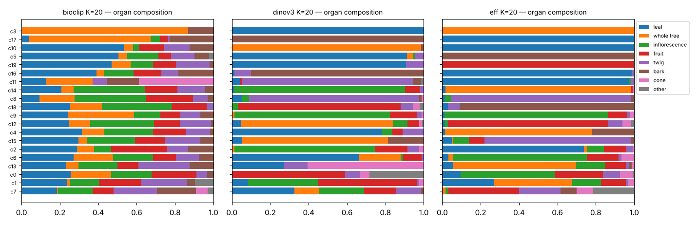

七个方向的最小实验 · 2026-10-30
主数据：EfficientNet-B0 原始向量（Git，SHA-256 已校验，1,641 个 image_id 与 individual_disjoint.csv 的划分逐一核对一致）。 第 1–7 项在 EfficientNet 上运行；BioCLIP / DINOv3 在第 2 项中通过已有的 cluster ID 参与，文末附录用恢复的原始向量重跑了纯向量实验。 图片按 URL 从 bioimages.vanderbilt.edu 加载。标签：器官 = BioImages organ_category（单标签）；尺度 = BioImages + Gemma（暂定）。
经验证结论 探索演示 未完成 / 受阻 恢复的旧结果（未重算）
经验证 = 有预先固定的协议、held-out 或重采样对照、可从脚本复现的数值。探索演示 = 个例图片、未经独立标签验证的解读。
1. NSC：性能—保留坐标数曲线
- 问什么
- 用很少的 PCA 坐标能否保持器官区分 / 复现现有聚类分组？
- 实际做了什么
- EfficientNet-B0 原始向量 → PCA-64（仅 train 拟合，白化）。自写 NSC（Tibshirani 2002）；Δ 网格 33 点；train 上按个体 GroupKFold 5 折选 Δ（1-SE 规则），test 只评估一次。任务 A：外部器官标签（BioImages organ_category，7 类）。任务 B：分组近似任务——目标是已有 EfficientNet K=20 cluster ID，与输入同源，具循环性。
- 结果
task n_train n_test classes delta_1se coords_1se coords_per_class_1se test_F1_delta0 test_F1_1se ratio organ (external label) 1169 211 7 1.500 22 7.857 0.692 0.672 0.971 grouping approximation: own K=20 cluster ID 1181 211 20 1.250 61 21.850 0.865 0.853 0.986 
三模型对比：器官任务的准确率—稀疏度曲线

EfficientNet 保留的 22 个维度长什么样
热图：行是器官，列是 NSC 保留的主方向；红色 = 该器官偏向这个方向的正端，蓝色 = 偏向负端，白色 = 对该器官不重要（被压成 0）。下面每行是一个方向两端各 4 张真实照片。只有前 7 个方向与器官有明显相关（|ρ|≥0.2），其余方向只对个别器官有用，含义需要看照片判断。BioCLIP / DINOv3 在 1-SE Δ 下全部 64 个维度都保留，因此只画曲线、不画热图。方向是数学方向，名称由照片和相关性推断。

PC1 · 用于: bark, fruit, inflorescence, leaf, twig, whole tree · − leaf (-0.56) / + whole tree (0.62) · ρ 尺度 -0.65, ρ 亮度 0.33
− 端
baskauf/35728
Zanthoxylum americanum
leaf · close-up
baskauf/14027
Populus tremuloides
leaf · close-up
baskauf/54683
Cornus amomum
leaf · close-up
baskauf/15196
Ailanthus altissima
leaf · close-up+ 端
baskauf/91011
Acer rubrum
whole tree · distant
baskauf/10643
Prunus serotina
whole tree · distant
baskauf/90975
Ulmus americana
whole tree · distant
baskauf/91150
Fraxinus americana
whole tree · distantPC2 · 用于: bark, leaf, twig, whole tree · − bark (-0.51) / + whole tree (0.45) · ρ 尺度 -0.44, ρ 亮度 0.11
− 端
baskauf/13589
Salix nigra
bark · mid-range
baskauf/30990
Celtis occidentalis
bark · close-up
baskauf/65650
Dirca palustris
bark · mid-range
baskauf/26511
Viburnum lantanoides
bark · close-up+ 端
baskauf/66147
Gleditsia triacanthos
whole tree · distant
baskauf/90661
Quercus macrocarpa
whole tree · distant
baskauf/91067
Nyssa sylvatica
whole tree · distant
baskauf/54851
Acer negundo
whole tree · distantPC3 · 用于: bark, cone, fruit, inflorescence, leaf, twig · − inflorescence (-0.43) / + leaf (0.55) · ρ 尺度 -0.04, ρ 亮度 0.14
− 端
baskauf/50462
Lindera benzoin
inflorescence · close-up
thomas/0440-04-06
Cephalanthus occidentalis
inflorescence · close-up
baskauf/51418
Nyssa sylvatica
inflorescence · close-up
baskauf/54555
Cornus amomum
fruit · close-up+ 端
baskauf/24251
Gymnocladus dioicus
leaf · close-up
kirchoff/em2584
Quercus palustris
bark · close-up
kirchoff/em2563
Quercus palustris
bark · close-up
baskauf/11341
Sassafras albidum
bark · close-upPC5 · 用于: bark, inflorescence, twig, whole tree · − inflorescence (-0.41) / + twig (0.40) · ρ 尺度 -0.15, ρ 亮度 -0.13
− 端
baskauf/19319
Quercus palustris
inflorescence · close-up
baskauf/19371
Quercus muehlenbergii
inflorescence · close-up
baskauf/10652
Prunus serotina
inflorescence · close-up
baskauf/26710
Sambucus nigra
inflorescence · close-up+ 端
kirchoff/em2397
Quercus rubra
twig · close-up
kirchoff/em1998
Fagus grandifolia
twig · mid-range
kirchoff/em2401
Quercus rubra
twig · close-up
kirchoff/em2344
Quercus palustris
twig · close-upPC6 · 用于: inflorescence, twig, whole tree · − twig (-0.23) / + inflorescence (0.26) · ρ 尺度 0.05, ρ 亮度 -0.19
− 端
baskauf/26510
Viburnum lantanoides
leaf · close-up
baskauf/32768
Pyrus calleryana
leaf · close-up
baskauf/58501
Ilex verticillata
leaf · close-up
baskauf/11644
Tilia americana
leaf · close-up+ 端
kirchoff/em2100
Quercus alba
leaf · close-up
kirchoff/em2571
Quercus palustris
leaf · close-up
kirchoff/em2101
Quercus alba
leaf · close-up
kirchoff/em2330
Quercus palustris
leaf · close-upPC7 · 用于: twig, whole tree · no clear organ correlate (|ρ|<0.2) · ρ 尺度 0.04, ρ 亮度 0.18
− 端
baskauf/11535
Castanea dentata
bark · distant
baskauf/38154
Betula lenta
whole tree · distant
baskauf/11497
Tsuga canadensis
whole tree · distant
baskauf/11504
Robinia pseudoacacia
whole tree · distant+ 端
baskauf/10343
Ulmus americana
inflorescence · mid-range
baskauf/19269
Acer rubrum
fruit · distant
baskauf/10339
Cercis canadensis
fruit · distant
baskauf/18076
Acer saccharum
whole tree · distantPC8 · 用于: fruit, inflorescence, leaf, twig, whole tree · − fruit (-0.32) / + inflorescence (0.26) · ρ 尺度 -0.04, ρ 亮度 -0.08
− 端
kirchoff/em2616
Quercus palustris
fruit · close-up
baskauf/30195
Carya ovata
fruit · close-up
baskauf/16299
Quercus bicolor
fruit · close-up
kirchoff/em2593
Quercus palustris
fruit · close-up+ 端
baskauf/51169
Fraxinus pennsylvanica
inflorescence · close-up
baskauf/51808
Lonicera morrowii
inflorescence · close-up
baskauf/33651
Gymnocladus dioicus
inflorescence · close-up
baskauf/35218
Cornus amomum
inflorescence · close-upPC9 · 用于: fruit, leaf, twig · no clear organ correlate (|ρ|<0.2) · ρ 尺度 -0.06, ρ 亮度 0.01
− 端
baskauf/11966
Prunus serotina
fruit · close-up
baskauf/13474
Sassafras albidum
fruit · close-up
baskauf/29816
Lindera benzoin
fruit · close-up
kirchoff/b5088
Cornus florida
fruit · close-up+ 端
baskauf/00000
Acer rubrum
inflorescence · distant
baskauf/50988
Quercus palustris
inflorescence · mid-range
baskauf/10496
Acer rubrum
fruit · mid-range
baskauf/50727
Acer saccharum
inflorescence · close-upPC10 · 用于: bark, fruit, twig · no clear organ correlate (|ρ|<0.2) · ρ 尺度 -0.03, ρ 亮度 0.25
− 端
baskauf/26421
Betula alleghaniensis
inflorescence · uncertain
baskauf/10997
Ailanthus altissima
whole tree · distant
baskauf/50630
Ostrya virginiana
inflorescence · close-up
baskauf/50598
Carpinus caroliniana
inflorescence · close-up+ 端
baskauf/89963
Platanus occidentalis
whole tree · distant
baskauf/89373
Ailanthus altissima
whole tree · distant
baskauf/89363
Ulmus americana
whole tree · distant
baskauf/89960a
Platanus occidentalis
whole tree · distantPC12 · 用于: bark · no clear organ correlate (|ρ|<0.2) · ρ 尺度 0.07, ρ 亮度 -0.15
− 端
kirchoff/b5071
Carpinus caroliniana
fruit · mid-range
baskauf/12131
Ostrya virginiana
whole tree · distant
thomas/0440-04-04
Cephalanthus occidentalis
whole tree · distant
baskauf/65657
Dirca palustris
whole tree · distant+ 端
baskauf/70876
Juglans cinerea
other · close-up
baskauf/70869
Juglans cinerea
fruit · close-up
ssmv/2-759-01
Quercus alba
whole tree · distant
baskauf/50588
Juniperus virginiana
cone · close-upPC14 · 用于: cone, fruit · no clear organ correlate (|ρ|<0.2) · ρ 尺度 0.03, ρ 亮度 -0.02
− 端
baskauf/15637
Quercus alba
fruit · close-upthomas/0440-04-04
Cephalanthus occidentalis
whole tree · distant
baskauf/11188
Juglans nigra
leaf · mid-range
baskauf/13417
Pinus strobus
cone · close-up+ 端
baskauf/26492
Viburnum lantanoides
inflorescence · close-up
thomas/0506-01-01
Toxicodendron radicans
inflorescence · close-up
baskauf/39159
Ailanthus altissima
twig · close-up
baskauf/18969
Amelanchier arborea
inflorescence · close-upPC15 · 用于: fruit, inflorescence · no clear organ correlate (|ρ|<0.2) · ρ 尺度 -0.01, ρ 亮度 -0.14
− 端
baskauf/15444
Rhus copallinum
whole tree · distant
baskauf/15009
Sorbus americana
leaf · close-up
baskauf/27139
Yucca filamentosa
bark · close-up
baskauf/16684
Rhus copallinum
whole tree · distant+ 端
baskauf/10469
Cornus florida
inflorescence · close-up
baskauf/12175
Sambucus nigra
inflorescence · close-up
baskauf/49332
Sorbus americana
inflorescence · close-up
baskauf/66145
Gleditsia triacanthos
leaf · close-upPC16 · 用于: bark, cone · no clear organ correlate (|ρ|<0.2) · ρ 尺度 -0.01, ρ 亮度 -0.01
− 端
baskauf/15141
Nyssa sylvatica
leaf · distant
kirchoff/b5089
Cornus florida
fruit · distant
kirchoff/b5090
Cornus florida
whole tree · distant
kirchoff/b5095
Cornus florida
fruit · mid-range+ 端
baskauf/d0127
Fagus grandifolia
whole tree · distant
baskauf/51027
Sassafras albidum
whole tree · distant
baskauf/16500
Juglans cinerea
whole tree · distantbaskauf/11497
Tsuga canadensis
whole tree · distantPC18 · 用于: fruit, twig · no clear organ correlate (|ρ|<0.2) · ρ 尺度 -0.05, ρ 亮度 0.14
− 端
baskauf/37883
Pyrus calleryana
fruit · close-up
baskauf/38441
Pyrus calleryana
fruit · close-up
baskauf/66149
Gleditsia triacanthos
bark · close-up
baskauf/29805
Nyssa sylvatica
leaf · close-up+ 端
baskauf/17457
Fraxinus pennsylvanica
twig · close-up
baskauf/10427
Nyssa sylvatica
twig · close-up
baskauf/15207
Juglans nigra
twig · close-up
baskauf/15205
Juglans nigra
twig · close-upPC19 · 用于: fruit, leaf, whole tree · no clear organ correlate (|ρ|<0.2) · ρ 尺度 -0.08, ρ 亮度 -0.01
− 端
thomas/0440-04-07
Cephalanthus occidentalis
inflorescence · close-up
baskauf/11093
Pinus strobus
leaf · close-up
baskauf/11434
Picea rubens
leaf · close-up
thomas/0104-01-03
Cephalanthus occidentalis
inflorescence · close-up+ 端
baskauf/10333
Juniperus virginiana
whole tree · distant
baskauf/54525
Rhus copallinum
inflorescence · mid-range
kaufmannm/ke063
Populus tremuloides
whole tree · distant
kaufmannm/ke062
Populus tremuloides
whole tree · uncertainPC26 · 用于: cone · no clear organ correlate (|ρ|<0.2) · ρ 尺度 -0.00, ρ 亮度 0.11
− 端
baskauf/34165
Amelanchier arborea
fruit · close-up
baskauf/54565
Lonicera morrowii
fruit · close-up
baskauf/54568
Lonicera morrowii
fruit · close-up
kirchoff/b5087
Cornus florida
fruit · close-up+ 端
kirchoff/em2324
Quercus palustris
fruit · close-up
kirchoff/em2325
Quercus palustris
fruit · close-up
kirchoff/em2067
Quercus palustris
fruit · close-up
kirchoff/em2323
Quercus palustris
fruit · close-upPC28 · 用于: fruit · no clear organ correlate (|ρ|<0.2) · ρ 尺度 0.02, ρ 亮度 -0.05
− 端
baskauf/15225
Pinus strobus
cone · close-up
baskauf/55141
Ulmus americana
leaf · close-up
baskauf/15823
Quercus palustris
whole tree · distant
baskauf/10392
Cercis canadensis
inflorescence · close-up+ 端baskauf/50727
Acer saccharum
inflorescence · close-up
baskauf/50587
Juniperus virginiana
cone · mid-range
baskauf/12450
Quercus palustris
twig · close-up
baskauf/31991
Pyrus calleryana
inflorescence · close-upPC29 · 用于: inflorescence · no clear organ correlate (|ρ|<0.2) · ρ 尺度 -0.01, ρ 亮度 -0.09
− 端
baskauf/11731
Yucca filamentosa
leaf · close-up
baskauf/12382
Quercus bicolor
leaf · close-up
baskauf/31780
Pyrus calleryana
leaf · close-up
baskauf/15117
Lindera benzoin
fruit · close-up+ 端
baskauf/51172
Fraxinus pennsylvanica
inflorescence · mid-range
baskauf/50978
Sassafras albidum
inflorescence · mid-range
baskauf/51174
Fraxinus pennsylvanica
inflorescence · mid-range
baskauf/70874
Juglans cinerea
other · close-upPC31 · 用于: twig · no clear organ correlate (|ρ|<0.2) · ρ 尺度 -0.02, ρ 亮度 -0.02
− 端
baskauf/34222
Pinus strobus
cone · close-up
baskauf/15827
Quercus palustris
whole tree · distant
baskauf/15185
Ailanthus altissima
fruit · close-up
baskauf/31453
Populus deltoides
inflorescence · close-up+ 端
thomas/0440-04-02
Cephalanthus occidentalis
bark · close-up
baskauf/33649
Gymnocladus dioicus
inflorescence · close-up
baskauf/51813
Zanthoxylum americanum
inflorescence · close-up
baskauf/55872
Juglans cinerea
twig · close-upPC32 · 用于: fruit · no clear organ correlate (|ρ|<0.2) · ρ 尺度 0.01, ρ 亮度 0.01
− 端baskauf/54568
Lonicera morrowii
fruit · close-upbaskauf/54565
Lonicera morrowii
fruit · close-up
baskauf/12700
Rhus aromatica
fruit · mid-range
baskauf/15353
Robinia pseudoacacia
fruit · mid-range+ 端
kirchoff/em2316
Quercus palustris
leaf · mid-range
kirchoff/em2566
Quercus palustris
leaf · mid-range
kirchoff/ac1516
Fagus grandifolia
bark · close-up
baskauf/12755
Fraxinus quadrangulata
whole tree · distantPC35 · 用于: fruit · no clear organ correlate (|ρ|<0.2) · ρ 尺度 -0.03, ρ 亮度 -0.04
− 端baskauf/27139
Yucca filamentosa
bark · close-up
baskauf/d1110
Gleditsia triacanthos
fruit · close-up
kirchoff/em2402
Quercus rubra
twig · close-up
baskauf/70792
Juglans cinerea
fruit · mid-range+ 端
baskauf/43789
Carpinus caroliniana
fruit · close-up
baskauf/10602
Fagus grandifolia
fruit · close-up
baskauf/43792
Carpinus caroliniana
fruit · close-up
baskauf/15184
Ailanthus altissima
fruit · mid-rangePC37 · 用于: cone · no clear organ correlate (|ρ|<0.2) · ρ 尺度 0.00, ρ 亮度 -0.04
− 端
baskauf/10493
Cercis canadensis
whole tree · distant
baskauf/16689
Tilia americana
twig · close-up
baskauf/10491
Cercis canadensis
whole tree · distant
baskauf/10497
Cercis canadensis
whole tree · distant+ 端baskauf/15184
Ailanthus altissima
fruit · mid-range
baskauf/66191
Gleditsia triacanthos
inflorescence · mid-range
baskauf/12405
Quercus alba
fruit · close-up
baskauf/10463
Platanus occidentalis
fruit · close-up- 能说明什么
- 器官：1-SE Δ=1.5 时只剩 22/64 个坐标（每类平均 7.9 个），test macro-F1 0.672，Δ=0 为 0.692（保留 97%）。而分组近似任务几乎不能稀疏化（61/64）——K-means 分组是分散在多数主成分上的。这些坐标是 PCA 主成分，不是生物学特征；单次 split、单个模型；未做跨折稳定性（Jaccard）。
2. PCA 保留信息 ＋ 已有 cluster 的组成与富集
- 问什么
- 降维丢了多少？已有 K=20 聚类各自是什么器官 / 尺度 / 物种组成？
- 实际做了什么
- PCA 保留量见第 6 项表（EfficientNet，train 拟合 / val 报告）。富集：BioCLIP、DINOv3、EfficientNet 已有的 K=20 cluster ID（全 1,641 张）× 器官 / 拍摄尺度。报告 count、基线、fold enrichment（FE）、按个体植株的 bootstrap 95% CI（500 次）、物种校正 FE（观测 / 按该簇物种构成的期望），以及最大物种占比。不报告 p 值：图片嵌套在 465 个个体与 63 个物种内，Fisher/卡方的独立性假设不成立。
- 结果
- PCA（EfficientNet，val）：2 维保留方差 16.5%，64 维 68.4%，256 维 89.5%。
representation/label clusters clusters_dominant_share_ge_0_6 clusters_fe_ci_lo_gt_1_5 clusters_species_adjusted_fe_gt_1_5 median_top_species_share clusters_lt5_individuals bioclip/organ 20.000 2.000 4.000 5.000 0.327 0.000 bioclip/shot_scale 20.000 8.000 2.000 2.000 0.327 0.000 dinov3/organ 20.000 17.000 19.000 19.000 0.115 0.000 dinov3/shot_scale 20.000 13.000 6.000 9.000 0.115 0.000 eff/organ 20.000 17.000 19.000 20.000 0.088 0.000 eff/shot_scale 20.000 14.000 8.000 8.000 0.088 0.000 各模型物种校正 FE 最高的 3 个器官簇：
representation cluster label n_images cluster_share fold_enrichment fe_ci_lo fe_ci_hi species_adjusted_fe n_individuals n_species top_species_share eff 5 bark 86 1.000 9.596 8.360 11.184 7.975 69 39 0.128 dinov3 4 bark 81 1.000 9.596 8.360 11.184 7.895 63 32 0.136 eff 19 fruit 23 1.000 7.852 6.729 9.726 6.544 12 5 0.783 eff 18 bark 67 0.910 8.737 7.488 10.143 6.446 58 38 0.075 dinov3 1 twig 79 0.886 7.234 6.103 8.528 6.395 61 42 0.076 dinov3 12 bark 80 0.900 8.637 7.445 9.985 6.371 68 43 0.087 bioclip 11 whole tree 121 0.868 4.464 4.022 4.995 3.074 78 26 0.124 bioclip 17 whole tree 122 0.631 3.247 2.737 3.777 2.705 85 33 0.098 bioclip 3 other 200 0.030 3.282 0.919 7.380 2.187 109 54 0.090 
- 能说明什么
- 描述性效应：DINOv3 / EfficientNet 有 19–20/20 个簇的主导器官 FE 下界 >1.5，且按物种构成校正后仍 >1.5，单一物种在簇内占比中位数仅 9–12%——器官簇不是“某个物种的簇”。BioCLIP 只有 4–5/20 个簇如此，最大物种占比中位数 33%（物种簇）。此结论与 README §2 的 NMI 一致，现在额外通过了个体重采样与物种校正。标签为单标签 organ_category，尺度标签为暂定。
3. Activation mapping（Grad-CAM ＋ 遮挡对照）
- 问什么
- EfficientNet 把图片推向某个簇时，依赖的是图片的哪个区域？热图是否忠实于分数？
- 实际做了什么
- EfficientNet-B0 权重 + 1,641 张原图均可得，因此做了真实计算（CPU fp32）。先复核：重新嵌入 40 张图与库存向量余弦中位数 0.9994（最低 0.9976）。目标分数 = 图像嵌入与 K=20 簇中心的余弦。每簇按到中心距离抽 2 个核心 + 2 个边界（seed 42，非手选，共 80 张）。遮挡对照：把 Grad-CAM 最高的 12/49 格换成均值灰，对比 10 次随机 12 格。合理性检查：重置最后一个特征块后热图应改变。BioCLIP / DINOv3 未做：需要加载它们的模型权重（原始向量后来已恢复，见附录）。
- 结果
- Grad-CAM 遮挡导致的分数下降大于随机遮挡的比例：88%（核心 85%，边界 90%）；下降中位数 0.065，随机为 0.009。最后一块随机化后与原热图的 Spearman 中位数为 0.15（热图依赖权重，检查通过）。

上图是固定规则选出的 8 例（4 个最大簇各取核心、边界各 1 张）。例如 c0 核心一例中，热点在图片上方的背景，而不在花序上。
- 能说明什么
- 热图对目标分数是忠实的（遮挡对照）。但它是否落在器官上尚未验证：没有器官掩膜，所以不能得出“簇看的是叶片而非背景”之类的结论。可视化的个例仅为探索演示。
4. Soft clustering ／ K
- 问什么
- K 选多少？有没有图片真正“夹在两个簇之间”，这种含混是否有含义？
- 实际做了什么
- 复用已有 K=10/20/50 × 10 个种子的结果（species/organ NMI、种子间 ARI）。新增：EfficientNet PCA-32 上的对角 GMM（K=20），5 个种子；计算每张图的最大归属概率与熵；BIC 取 K∈{5,10,20,30,50}；检验熵是否能预测 test 上的探针错误，以及是否能预测 mid-range 尺度。
- 结果
representation k seeds species_nmi_mean organ_nmi_mean stability_pairwise_ari_mean bioclip 10 10 0.466 0.133 0.597 bioclip 20 10 0.597 0.146 0.519 bioclip 50 10 0.734 0.196 0.581 dinov3 10 10 0.217 0.503 0.588 dinov3 20 10 0.322 0.498 0.594 dinov3 50 10 0.457 0.490 0.563 efficientnet_b0 10 10 0.128 0.535 0.709 efficientnet_b0 20 10 0.212 0.498 0.544 efficientnet_b0 50 10 0.327 0.456 0.440 GMM 的 BIC：K=5: -99,358, K=10: -102,657, K=20: -105,956, K=30: -106,382, K=50: -103,058（K=30 最低，K=20–30 之间趋于平缓）。种子间标签 ARI 均值 0.66，熵排序 Spearman 0.76；与已有 K-means 的 ARI 为 0.54。最大归属 <0.6 的图片仅占 1.3%。熵对探针错误的 AUROC 为 0.51（test 211 张，错 165 张）；对 mid-range 尺度的 AUROC 为 0.64。
熵最高的 8 张真实图片（p1/p2 = 前两个成分的概率，括号内为该成分的主导器官）：

baskauf/10939
Rhus copallinum
leaf·close-up
p1=0.35(leaf 41%) p2=0.33(leaf 77%)
baskauf/37494
Cephalanthus occidentalis
fruit·close-up
p1=0.60(inflorescence 77%) p2=0.19(inflorescence 58%)
baskauf/35376
Ilex verticillata
twig·close-up
p1=0.64(inflorescence 77%) p2=0.17(leaf 77%)
baskauf/31644
Acer negundo
inflorescence·close-up
p1=0.48(inflorescence 58%) p2=0.27(inflorescence 77%)
baskauf/51814
Zanthoxylum americanum
inflorescence·close-up
p1=0.46(twig 89%) p2=0.32(leaf 41%)
baskauf/10805
Tsuga canadensis
cone·close-up
p1=0.49(leaf 41%) p2=0.26(leaf 77%)
baskauf/35249
Castanea dentata
inflorescence·close-up
p1=0.48(leaf 41%) p2=0.38(inflorescence 77%)
baskauf/34219
Pinus strobus
cone·close-up
p1=0.66(inflorescence 77%) p2=0.17(inflorescence 58%)- 能说明什么
- 对角 GMM 在 32 维下非常“硬”，含混图片很少；熵不能预测分类错误（0.51≈随机），对 mid-range 尺度有弱信号（0.64）。软概率不等于多器官：多器官 AUROC 无法计算，因为 Git 中没有多标签（Gemma 多标签 / Human Gold 尚未导出）。上面的个例是探索演示。
5. AE 恢复 ＋ PCA 轴两端的真实图片
- 问什么
- 非线性 AE 是否比 PCA 好？主要 PCA 方向对应什么？
- 实际做了什么
- 从已发布网站 scale/meeting/ 的 Experiment 6 表中恢复了 AE 与 PCA 的对比（原始 HTML 存于 recovered_site/）。只加一个检查：线性 AE（32 维，3,000 epoch）应与 PCA-32 一致。轴解读：EfficientNet PCA（train 拟合）PC1–5 与尺度（distant=0 → close=2）、各器官 one-vs-rest、缩略图亮度的 Spearman；每端 6 张真实图片。不做架构搜索。
- 结果
model method test_mse knn15_retention bioclip25 PCA 0.000284 0.667299 bioclip25 Autoencoder 0.000280 0.616746 dinov3 PCA 0.000498 0.766509 dinov3 Autoencoder 0.000491 0.745656 efficientnet_b0 PCA 0.000296 0.729542 efficientnet_b0 Autoencoder 0.000301 0.721327 线性 AE 检查：PCA-32 test MSE 0.0002961，线性 AE 0.0002971（比值 1.003），并且本次 PCA-32 的数值与网站上的 EfficientNet PCA 0.000296 一致——训练代码与数据对齐。
pc var rho_scale_close rho_brightness rho_leaf rho_whole tree rho_inflorescence rho_fruit rho_twig rho_bark 1 0.10 -0.65 0.33 -0.56 0.62 -0.10 -0.04 -0.17 0.34 2 0.06 -0.44 0.11 0.32 0.45 0.01 -0.10 -0.37 -0.51 3 0.05 -0.04 0.14 0.55 0.03 -0.43 -0.30 -0.26 0.38 4 0.03 -0.10 0.04 -0.04 -0.08 0.05 -0.03 0.07 0.09 5 0.03 -0.15 -0.13 0.04 0.17 -0.41 0.01 0.40 -0.21 PC1 低端
baskauf/35728
Zanthoxylum americanum
leaf · close-upbaskauf/14027
Populus tremuloides
leaf · close-upbaskauf/54683
Cornus amomum
leaf · close-upbaskauf/15196
Ailanthus altissima
leaf · close-up
baskauf/52430
Carya cordiformis
leaf · close-up
baskauf/12366
Quercus bicolor
leaf · close-upPC1 高端
baskauf/91011
Acer rubrum
whole tree · distantbaskauf/10643
Prunus serotina
whole tree · distantbaskauf/90975
Ulmus americana
whole tree · distantbaskauf/91150
Fraxinus americana
whole tree · distant
baskauf/91107
Ulmus americana
whole tree · distant
baskauf/90876
Aesculus glabra
whole tree · distantPC2 低端
baskauf/13589
Salix nigra
bark · mid-rangebaskauf/30990
Celtis occidentalis
bark · close-upbaskauf/65650
Dirca palustris
bark · mid-rangebaskauf/26511
Viburnum lantanoides
bark · close-up
baskauf/16715
Nyssa sylvatica
bark · close-up
baskauf/12460
Fraxinus americana
bark · close-upPC2 高端
baskauf/66147
Gleditsia triacanthos
whole tree · distantbaskauf/90661
Quercus macrocarpa
whole tree · distantbaskauf/91067
Nyssa sylvatica
whole tree · distantbaskauf/54851
Acer negundo
whole tree · distant
baskauf/90899
Fraxinus americana
whole tree · distant
baskauf/10978
Ailanthus altissima
whole tree · distantPC3 低端
baskauf/50462
Lindera benzoin
inflorescence · close-upthomas/0440-04-06
Cephalanthus occidentalis
inflorescence · close-upbaskauf/51418
Nyssa sylvatica
inflorescence · close-upbaskauf/54555
Cornus amomum
fruit · close-up
baskauf/51014
Sassafras albidum
inflorescence · close-up
baskauf/32173
Rhus aromatica
inflorescence · close-upPC3 高端
baskauf/24251
Gymnocladus dioicus
leaf · close-upkirchoff/em2584
Quercus palustris
bark · close-upkirchoff/em2563
Quercus palustris
bark · close-upbaskauf/11341
Sassafras albidum
bark · close-up
baskauf/11695
Lindera benzoin
leaf · close-up
baskauf/12583
Rhus copallinum
leaf · close-up- 能说明什么
- AE：恢复的结果显示 AE 的 MSE 与 PCA 基本相同，而邻居保留更差（3 个模型都是如此）→ 没有值得增加复杂度的非线性结构，这条线到此为止（恢复结果 + 线性 sanity 已验证）。轴：PC1 与尺度 ρ=−0.65、与 whole tree ρ=+0.62（近景叶片 ↔ 远景整树）；PC2 ≈ 树皮 ↔ 整树；PC3 ≈ 花序 / 果实 ↔ 叶片；PC4 与所列标签的相关均 |ρ|<0.1，没有可读含义。轴的命名是对相关性的描述，并非因果。
6. 可视化保真度
- 问什么
- 二维 / 较高维 PCA 图在多大程度上保留了原空间的邻居结构？
- 实际做了什么
- EfficientNet，PCA 仅在 train（1,181）上拟合，在 val（249）上评估：val 池内的 15-NN 重叠、trustworthiness、重建 R²、线性探针（C=100，与现有基准一致）、K=20 ARI。另在全 1,641 张上计算 2D 的数值，以便与网站对照。
- 结果
d train_explained_var val_recon_r2 val_knn15_overlap val_trustworthiness probe_species_macroF1 probe_organ_macroF1 kmeans20_ARI_vs_full 2 0.165 0.140 0.327 0.813 0.004 0.491 0.230 8 0.345 0.324 0.582 0.937 0.027 0.605 0.489 16 0.454 0.421 0.655 0.960 0.073 0.617 0.540 32 0.570 0.524 0.720 0.972 0.084 0.616 0.531 64 0.684 0.617 0.759 0.977 0.095 0.671 0.593 128 0.796 0.707 0.809 0.985 0.091 0.662 0.576 256 0.895 0.789 0.850 0.993 0.100 0.651 0.525 full 1.000 1.000 1.000 1.000 0.101 0.649 1.000 
- 能说明什么
- 2D 只保留约 13% 的 15 近邻（全 1,641 张；val 池为 33%），K=20 ARI 0.23 → 不能从二维图读结构。按预设规则（15-NN ≥ 0.85 且物种探针差距在 1pp 内），在 ≤256 维中找不到 d*（256 维为 0.850 / 0.849，在边界上）。器官探针在 64 维左右已饱和。（物种探针在 val 上本来就很低：EfficientNet 不是物种模型。）
7. 反演：检索最近的真实图片
- 问什么
- 某个簇中心 / 某个轴方向上的点“长什么样”？
- 实际做了什么
- 不训练生成模型。在完整的 1,280 维 EfficientNet 空间中，用余弦相似度检索离以下潜在点最近的 6 张真实图片：20 个 EfficientNet K=20 簇中心，以及 PC1 / PC2 的 均值 ± 2SD 点（重新归一化）。
- 结果
point cluster_size cluster_dominant_organ cluster_dominant_share top1_cos top6_in_cluster top6_share_dominant_organ top6_n_species centroid c0 136.00 inflorescence 0.49 0.71 6.00 0.67 4 centroid c1 92.00 whole tree 0.40 0.78 6.00 0.83 5 centroid c2 126.00 leaf 0.74 0.85 6.00 0.83 5 centroid c3 65.00 whole tree 1.00 0.84 5.00 1.00 6 centroid c4 69.00 whole tree 0.77 0.85 6.00 0.67 6 centroid c5 86.00 bark 1.00 0.93 6.00 1.00 5 centroid c6 122.00 inflorescence 0.70 0.78 6.00 1.00 6 centroid c7 60.00 fruit 0.37 0.69 6.00 0.67 1 centroid c8 67.00 twig 0.94 0.79 6.00 1.00 6 centroid c9 87.00 inflorescence 0.85 0.82 6.00 1.00 5 centroid c10 65.00 leaf 1.00 0.89 6.00 1.00 5 centroid c11 70.00 leaf 0.97 0.89 6.00 1.00 6 centroid c12 66.00 fruit 0.83 0.72 6.00 1.00 6 centroid c13 73.00 whole tree 0.64 0.84 6.00 0.50 4 centroid c14 114.00 whole tree 0.96 0.92 6.00 1.00 5 centroid c15 122.00 twig 0.76 0.79 6.00 1.00 6 centroid c16 75.00 leaf 0.99 0.87 6.00 1.00 6 centroid c17 56.00 leaf 1.00 0.94 6.00 1.00 1 centroid c18 67.00 bark 0.91 0.84 6.00 0.83 6 centroid c19 23.00 fruit 1.00 0.79 6.00 1.00 1 centroid c14

baskauf/91105
Quercus rubra
whole tree · distant · cos 0.92
baskauf/90972
Quercus rubra
whole tree · distant · cos 0.91
baskauf/11335
Juglans nigra
whole tree · distant · cos 0.90
baskauf/13379
Fraxinus pennsylvanica
whole tree · distant · cos 0.89
baskauf/91083
Fraxinus americana
whole tree · distant · cos 0.89
ssmv/2-185-01
Ginkgo biloba
whole tree · distant · cos 0.88centroid c5

kirchoff/em2393
Quercus rubra
bark · close-up · cos 0.93
kirchoff/em2106
Quercus alba
bark · uncertain · cos 0.92
kirchoff/em2607
Quercus palustris
bark · close-up · cos 0.92
kirchoff/em2564
Quercus palustris
bark · close-up · cos 0.92
baskauf/12456
Fraxinus americana
bark · close-up · cos 0.92
baskauf/12319
Quercus muehlenbergii
bark · close-up · cos 0.92centroid c0

baskauf/66169
Gleditsia triacanthos
fruit · close-up · cos 0.71
baskauf/50597
Carpinus caroliniana
inflorescence · close-up · cos 0.70
baskauf/66137
Gleditsia triacanthos
inflorescence · close-up · cos 0.70baskauf/33649
Gymnocladus dioicus
inflorescence · close-up · cos 0.70
baskauf/51420
Aesculus glabra
fruit · close-up · cos 0.70
baskauf/51704
Gymnocladus dioicus
inflorescence · close-up · cos 0.70centroid c13

baskauf/10336
Platanus occidentalis
whole tree · distant · cos 0.84
baskauf/50711
Acer saccharum
whole tree · distant · cos 0.81
baskauf/50713
Acer saccharum
inflorescence · distant · cos 0.80baskauf/10343
Ulmus americana
inflorescence · mid-range · cos 0.80
baskauf/50750
Acer rubrum
whole tree · distant · cos 0.78baskauf/00000
Acer rubrum
inflorescence · distant · cos 0.78PC1 -2SD
baskauf/35728
Zanthoxylum americanum
leaf · close-up · cos 0.76
baskauf/15360
Platanus occidentalis
twig · mid-range · cos 0.73baskauf/12366
Quercus bicolor
leaf · close-up · cos 0.73
baskauf/11920
Acer rubrum
leaf · close-up · cos 0.72
baskauf/12465
Fraxinus americana
leaf · close-up · cos 0.72
baskauf/15696
Carpinus caroliniana
leaf · close-up · cos 0.71PC1 +2SD
baskauf/10643
Prunus serotina
whole tree · distant · cos 0.77
baskauf/89397
Pinus strobus
whole tree · distant · cos 0.77baskauf/91107
Ulmus americana
whole tree · distant · cos 0.76
baskauf/12413
Quercus macrocarpa
whole tree · distant · cos 0.76baskauf/91011
Acer rubrum
whole tree · distant · cos 0.75
baskauf/90911
Platanus occidentalis
whole tree · distant · cos 0.74- 能说明什么
- 簇中心的近邻平均有 6.0/6 张属于该簇，主导器官占比 90%，高于簇整体的 82%：检索出的是该簇的“典型”图片（会夸大簇的纯度，展示时需注意）。PC1 −2SD → 近景叶片，+2SD → 远景整树，与第 5 项一致。这是检索，不是图像生成。
附：同样的纯向量实验在 BioCLIP 2.5 和 DINOv3 上的结果
主实验跑完后，从 Drive 恢复了 BioCLIP 2.5（1,641 × 1,024）和 DINOv3（1,641 × 768）的原始向量，记录了 SHA-256，并核对了 image_id 顺序和 split 与 manifest 一致。第 1、4、5、6、7 项用 FGV_MODEL=bioclip|dinov3 原样重跑，结果在 results/bioclip/ 和 results/dinov3/。第 3 项仍需要 BioCLIP / DINOv3 的模型权重。NSC 的分组任务和检索使用各模型自己已有的 K=20 簇。熵对错误的 AUROC 只有 EfficientNet 有，因为其他模型的逐图预测不在 Git 中。
| model | 2D 15-NN (all 1,641) | 64D 15-NN (val) | d* | species probe F1 (val, full) | organ probe F1 (val, full) | NSC organ coords @1-SE | NSC organ F1 1-SE/Δ0 | GMM max<0.6 | GMM seed ARI | entropy AUROC mid-range | PC1 ρ scale | PCA-32 test MSE (site) | linear AE / PCA | centroid top-6 dominant organ |
|---|---|---|---|---|---|---|---|---|---|---|---|---|---|---|
| BioCLIP 2.5 | 0.096 | 0.746 | 256 | 0.791 | 0.725 | 64 | 0.977 | 0.011 | 0.556 | 0.373 | 0.033 | 0.000284 (0.000284) | 1.000 | 0.500 |
| DINOv3 | 0.143 | 0.806 | >256 | 0.431 | 0.828 | 64 | 0.958 | 0.008 | 0.566 | 0.619 | -0.506 | 0.000498 (0.000498) | 1.000 | 0.908 |
| EfficientNet-B0 | 0.125 | 0.759 | >256 | 0.101 | 0.649 | 22 | 0.971 | 0.013 | 0.657 | 0.639 | -0.645 | 0.000296 (0.000296) | 1.003 | 0.900 |
BioCLIP 2.5：PC1–3
| pc | var | rho_scale_close | rho_brightness | reading |
|---|---|---|---|---|
| 1 | 0.09 | 0.03 | -0.00 | no clear organ correlate (all |rho|<0.2) |
| 2 | 0.05 | 0.12 | -0.05 | no clear organ correlate (all |rho|<0.2) |
| 3 | 0.04 | -0.45 | 0.34 | low end ~ leaf, high end ~ whole tree |
DINOv3：PC1–3
| pc | var | rho_scale_close | rho_brightness | reading |
|---|---|---|---|---|
| 1 | 0.09 | -0.51 | 0.33 | low end ~ leaf, high end ~ whole tree |
| 2 | 0.06 | -0.59 | 0.18 | low end ~ bark, high end ~ whole tree |
| 3 | 0.05 | 0.00 | -0.10 | low end ~ leaf, high end ~ inflorescence |
EfficientNet-B0：PC1–3
| pc | var | rho_scale_close | rho_brightness | reading |
|---|---|---|---|---|
| 1 | 0.10 | -0.65 | 0.33 | low end ~ leaf, high end ~ whole tree |
| 2 | 0.06 | -0.44 | 0.11 | low end ~ bark, high end ~ whole tree |
| 3 | 0.05 | -0.04 | 0.14 | low end ~ inflorescence, high end ~ leaf |
解读：(1) 恢复的向量就是之前用的那批：三个模型的 PCA-32 test MSE 与网站上 AE 表的数值在 6 位小数上一致，线性 AE 与 PCA 吻合（比值≈1）。(2) 三个模型的 2D 都只保留 10–14% 的 15 近邻；只有 BioCLIP 在 256 维时满足 d* 规则。(3) 拍摄尺度轴在 EfficientNet（ρ=−0.65）和 DINOv3（ρ=−0.51）里是 PC1，在 BioCLIP 里到 PC3 才出现（ρ=−0.45；PC1–2 的 |ρ|≤0.12），与 BioCLIP 以物种为先一致。(4) NSC 只在 EfficientNet 上能把器官任务稀疏化（22/64 个坐标）；BioCLIP 和 DINOv3 的器官信息分散在全部 64 个主成分上。(5) 三个模型的 GMM 软归属都接近硬分配（最大归属 <0.6 的图片 ≤1.3%）。(6) 簇中心检索出的近邻中，主导器官占比在 DINOv3 / EfficientNet 为 90–91%，在 BioCLIP 只有 50%，因为 BioCLIP 的簇不是器官簇。单次划分，每个设置单个种子；标注为描述性的部分只作描述。
复现
cd botanical-computer-vision/meeting_minimal bash fetch_images.sh # 下载 1,641 张原图 + 缩略图到 /home/user/imgcache（不进 Git） bash run_all.sh # 在 EfficientNet 上依次运行 exp1–exp7 并生成本页 bash run_models.sh # 在 BioCLIP / DINOv3 上跑纯向量实验，并重新生成两份报告
依赖：python 3、numpy、pandas、scikit-learn 1.9、scipy、matplotlib、torch/torchvision 2.x（CPU）。所有随机种子为 42。逐项输出见 results/。